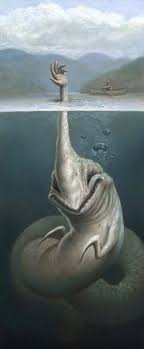

The Hand Sea Monster is a monster in the painting Drowning Salvation By Matt Dangler. In this painting, a guy on a boat is going fishing and then he sees a hand. He feels he has to save the person from drowning, but when he tried grabbing onto the hand he got pulled down. Then he proceeds to see a big sea alien with creepy alien eyes and large grin. It also has praying mantis like arms and a snake like body. This monster tends to deceive it's victims by sticking it's head or top which is in the shape of a hand outside so the person thinks it is someone in need. It then grabs the person who tries to help the hand and devours/kills them.
